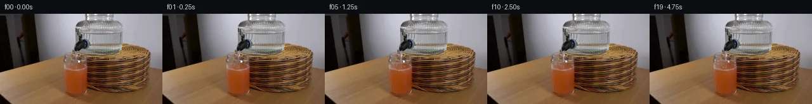

![首帧]()

Round 00
2026-11-05T10:24:45.063307+00:00像素候选变化代码 +212/−0inspection 更新
pixels 12d81bb3106bfaf8 · code f31605ce9b211549
查看本轮 generate.py 真实 diff
--- previous/generate.py +++ current/generate.py @@ -0,0 +1,212 @@ +#!/usr/bin/env python3 +"""Generate the 20-frame locked-camera water-pouring continuation. + +The source photograph is retained as the background. All animation is made +with deterministic NumPy/Pillow pixel operations in the glass/spout region. +""" + +from pathlib import Path +import hashlib +import numpy as np +from PIL import Image, ImageDraw, ImageFont + +from artifact_io import save + + +ROOT = Path(__file__).resolve().parent +W, H, N = 256, 144, 20 + + +def blend_color(im, mask, color): + """Alpha blend one RGB color using a floating HxW mask.""" + a = np.clip(mask, 0.0, 1.0)[..., None] + return im * (1.0 - a) + np.asarray(color, dtype=np.float32) * a + + +def tapered_interior_mask(y_top, y_bottom=128): + """Soft trapezoidal mask staying clear of the photographed glass edges.""" + yy, xx = np.mgrid[0:H, 0:W] + frac = np.clip((yy - 72.0) / 58.0, 0.0, 1.0) + left = 102.0 + 3.2 * frac + right = 137.0 - 2.5 * frac + edge = np.minimum(xx - left, right - xx) + horizontal = np.clip(edge + 1.0, 0.0, 1.0) + vertical = np.clip(yy - y_top + 1.0, 0.0, 1.0) * np.clip(y_bottom - yy, 0.0, 1.0) + return horizontal * vertical + + +def preserve_glass_details(source): + """Mask bright, nearly neutral highlights and very dark optical edges.""" + hi = source.max(2).astype(float) + lo = source.min(2).astype(float) + chroma = hi - lo + lum = source.mean(2) + return (((lum > 174) & (chroma < 48)) | (lum < 42)).astype(np.float32) + + +def add_liquid(im, source, frame_no, surface_y): + """Raise and lightly dilute the photographed grapefruit juice.""" + if frame_no < 4: + return im + progress = (frame_no - 3) / 16.0 + yy, xx = np.mgrid[0:H, 0:W] + detail = preserve_glass_details(source) + + # Newly occupied band: sample photographed juice from just below its old + # surface. This retains the scene's genuine color/noise and glass optics. + new_band = tapered_interior_mask(surface_y, 79.0) + sample_y = np.clip(np.rint(79.0 + (yy - surface_y)).astype(int), 79, 87) + sampled = source[sample_y, xx].astype(np.float32) + # Water slightly lifts luminance and lowers saturation in the newest band. + gray = sampled.mean(2, keepdims=True) + sampled = sampled * (0.94 - 0.02 * progress) + gray * (0.04 + 0.02 * progress) + 2.0 + a = (new_band * (1.0 - 0.72 * detail))[..., None] + im = im * (1.0 - a) + sampled * a + + # Very restrained dilution throughout the central liquid volume. + body = tapered_interior_mask(max(79.0, surface_y), 127.5) + body *= (1.0 - 0.82 * detail) + target = im * np.array([0.995, 0.993, 0.990], dtype=np.float32) + np.array([2.2, 2.4, 2.5]) + ba = (body * (0.035 + 0.035 * progress))[..., None] + im = im * (1.0 - ba) + target * ba + + # A soft amber meniscus following the slowly rising surface. + wave = 0.20 * np.sin((xx - 105.0) * 0.55 + frame_no * 0.72) + dist = np.abs(yy - (surface_y + wave)) + line = np.clip(1.20 - dist, 0.0, 1.0) + line *= np.clip((xx - 104.0) / 2.0, 0, 1) * np.clip((136.0 - xx) / 2.0, 0, 1) + line *= np.clip((80.0 - yy) / 2.0, 0, 1) + im = blend_color(im, line * (0.16 + 0.07 * progress), (228, 167, 118)) + return im + + +def add_stream(im, frame_no, surface_y): + """Composite a narrow translucent water thread and moving specular core.""" + if frame_no == 0: + return im + yy, xx = np.mgrid[0:H, 0:W] … diff truncated; 125 more lines …